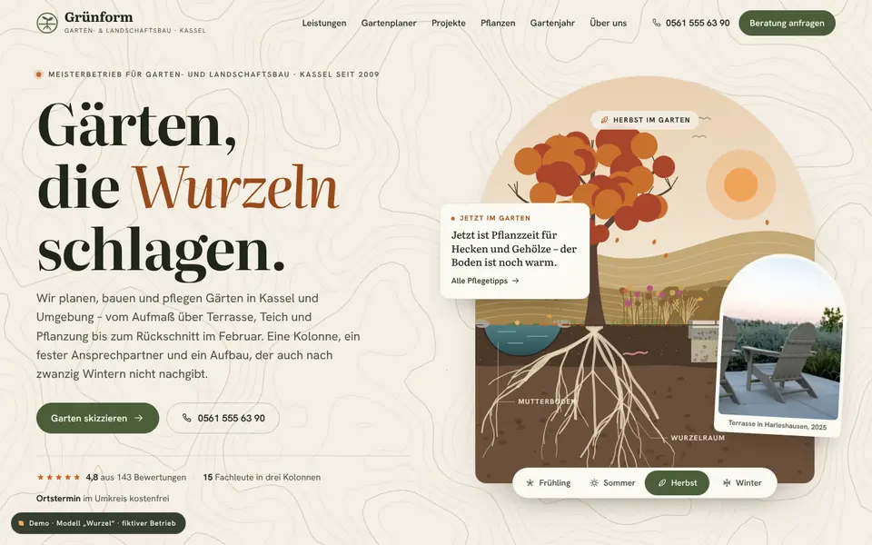
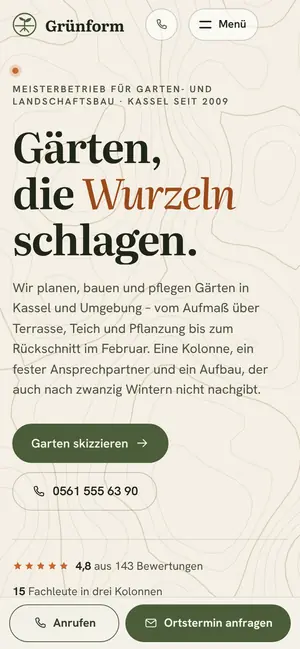

Case Study 13 / 30 · Handwerk & Bau
Grünform Garten- & Landschaftsbau
Modell „Wurzel“
GaLaBau-Demo mit Jahreszeiten-Umschalter, Gartenplaner im Raster und Pflanzen-Explorer.


Ausgangslage
Grünform ist ein erfundener Garten- und Landschaftsbau-Meisterbetrieb in Kassel. Besucher haben meist ein Grundstück im Kopf und wollen ausprobieren, was daraus werden könnte, welche Pflanzen zum Standort passen und was ein Pflegevertrag umfasst. Die Seite soll Planung erlebbar machen und daraus eine Anfrage mit konkreten Angaben erzeugen.
Idee
Das Modell „Wurzel“ wirkt natürlich und architektonisch zugleich: Moos, Stein, Erde und ein helles Licht als Grundfarben, Literata als Serifen-Display mit Hanken Grotesk für Text. Die ganze Seite wechselt mit der Jahreszeit – Frühling, Sommer, Herbst und Winter verändern Palette, Hero-Illustration (Laub, Blüten, Schnee, Sonnenstand) und Pflegetipps, der Start richtet sich nach dem Kalendermonat.
Was die Seite kann
- GartenplanerRaster aus 10 × 6 Feldern à 2 × 2 m, in dem du Terrasse, Weg, Rasen, Beet, Teich und Baum per Klick, Ziehen oder Tastatur setzt – mit Vorlagen, Rückgängig und einer groben Kostenspanne als Beispielrechnung.
- Übernahme der SkizzeDer Plan wandert als Mini-Plan und Text ins Anfrageformular.
- Pflanzen-Explorer20 Pflanzen mit Filter nach Standort (Sonne, Halbschatten, Schatten) und Eigenschaften wie pflegeleicht, insektenfreundlich oder heimisch, mit Blühkalender und Merkliste für die Anfrage.
- Bodenschichten-SchnittEin SVG-Schnitt des Pflasteraufbaus, dessen sechs Schichten beim Scrollen nacheinander einfallen, während die Erklärung mitläuft.
- Vorher/Nachher-ReglerZwei Draufsicht-Pläne (Bestand und fertig) lassen sich per Maus, Touch oder Tastatur vergleichen.
- GartenjahrPflegetipps je Jahreszeit und Pflegeverträge, synchron mit dem Umschalter im Hero.
Dein Betrieb
So eine Seite für dich?
Schreib mir kurz, was du anbietest und was deine Website leisten soll. Du bekommst eine ehrliche Einschätzung, was sie kostet und was sie dir bringen kann.
Projekt anfragen